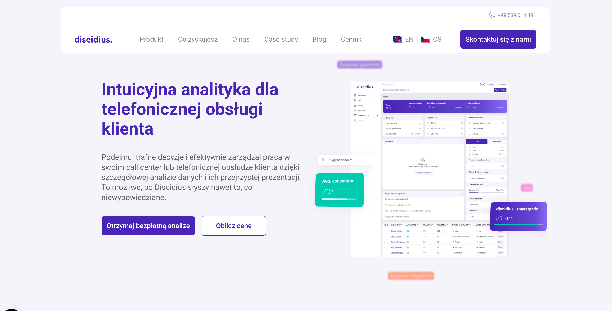
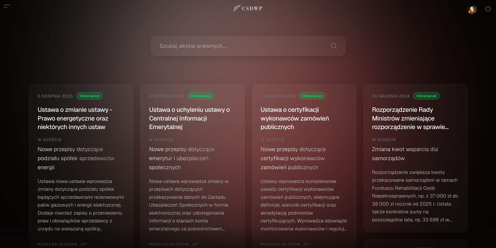
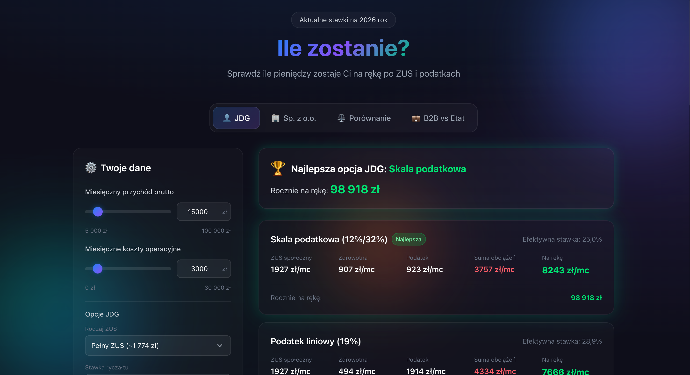
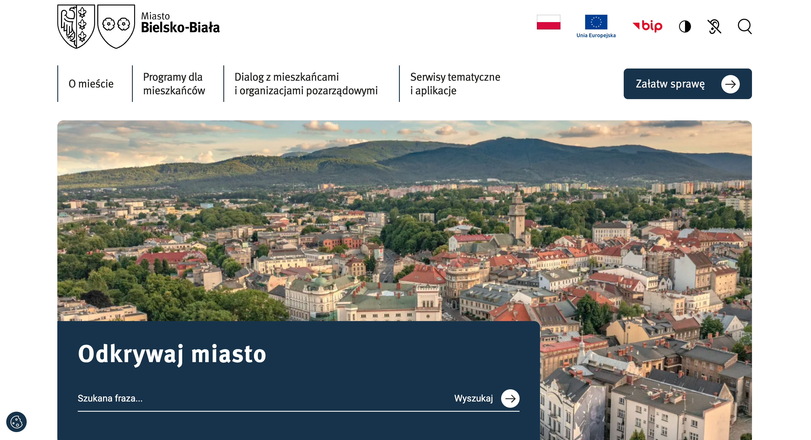
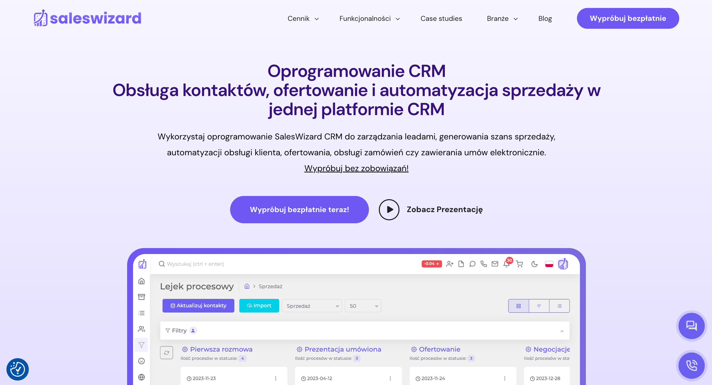

Discidius
Telecommunication analytics platform providing insights and data visualization for network performance monitoring.
Next.js
Tailwind CSS
Figma
I build thoughtful, performant web applications with attention to detail and design sensibility.
Built after hours, driven by curiosity.

Making Polish legislation accessible. AI transforms complex legal acts into clear, understandable language. Track voting statistics, explore parliamentary data, and stay informed about what's happening in Polish politics.

A financial calculator helping users understand their real earnings after taxes and expenses. Clean interface, precise calculations, thoughtful UX.
Projects developed as part of the SoftwareThings team for clients across industries.

Telecommunication analytics platform providing insights and data visualization for network performance monitoring.

Official website for the city of Bielsko-Biała. A comprehensive municipal portal serving residents and visitors.

Corporate website for an energy sector company. Modern design with focus on sustainability messaging.

CRM and sales management platform helping businesses track leads, manage pipelines, and close deals.
Personal explorations and learning experiments.
Intelligent pomodoro app featuring an interactive 3D clock model.
02Automated scanner for Otomoto, alerting you to the best car deals.
03Terminal-inspired app with built-in commands and auto-suggestions.
04Dynamic search bar utilizing external API for seamless results.
I'm a 25-year-old software engineer based in Poland, focused on creating refined, performant web applications. My work combines technical precision with design sensibility.
I work primarily with React, Next.js, TypeScript, and Vue. I also have experience with Node.js, Tailwind CSS, and enjoy designing in Figma.
Currently available for new projects and collaborations.